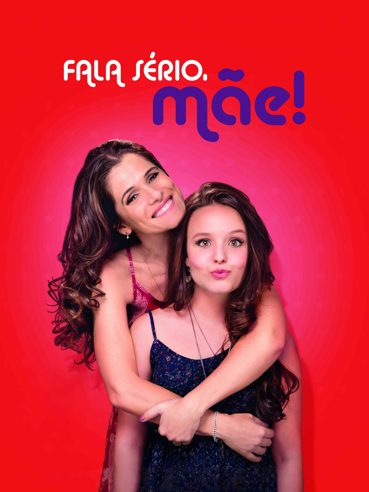
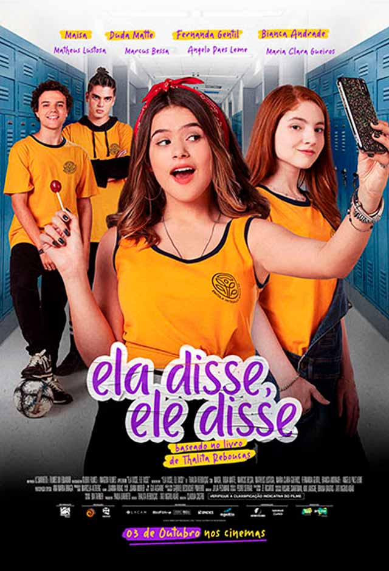

Uma viagem pela vida e pelas obras da autora que conquistou milhares de jovens leitores.
Começar leituraA mãe da adolescência brasileira!
Thalita Rebouças é uma escritora brasileira conhecida por suas histórias voltadas principalmente ao público juvenil.
Suas obras apresentam situações próximas da realidade dos adolescentes, como amizade, família, escola, sentimentos e descobertas.
Por meio da literatura, Thalita mostra que ler também é uma forma de se conhecer e enxergar o mundo.
Algumas obras da autora.

Uma história sobre família, crescimento e relações.
Uma aventura sobre amizade, sonhos e juventude.

Uma história mostrando diferentesvisões da adolescência.
Qual vibe da Thalita combina com você hoje?
Dê uma giradinha e descubra uma palavra que tem tudo a ver com o universo das histórias, personagens e aventuras da autora.
Seu universo, suas histórias, sua vibe!
A trajetória literária de Thalita Rebouças.
Primeiro livro publicado pela autora.
Um dos maiores sucessos juvenis.
Início da famosa série "Fala Sério".
Uma aventura com fantasia e amizade.
Uma história com diferentes pontos de vista.
Temas como bullying e autoestima.
Livro adaptado para a Netflix.
A autora continua conquistando leitores.
Cultura, identidade e protagonismo juvenil.
Músicas que combinam com os sentimentos presentes nas obras de Thalita Rebouças.
Pronto(a) para sentir a energia da adolescência brasileira!
A escrita de Thalita Rebouças chama atenção porque traz situações reais da adolescência. Suas histórias mostram que a literatura pode ser leve, divertida e transformadora.